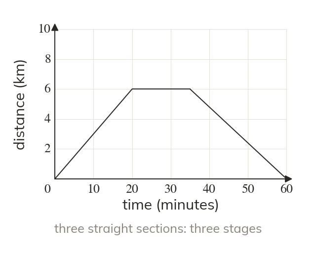
What the axes say
A distance-time graph plots distance from the start against time. Each straight section is one stage of the journey, travelled at a constant speed.
A journey can be told as a graph: every stage, every stop and every return shows up as a straight section. Today we read those stories and draw our own.
Work down the page at your own pace. Write every answer in your book first, then click to check it.
Read each card, then follow the worked examples one step at a time.

A distance-time graph plots distance from the start against time. Each straight section is one stage of the journey, travelled at a constant speed.
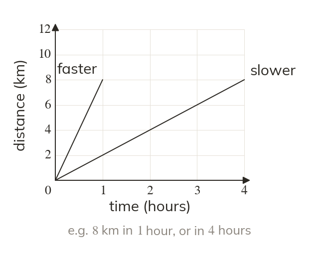
A horizontal section means the object is stationary. A steeper section means a faster speed. A section back down to zero is a return to the start.
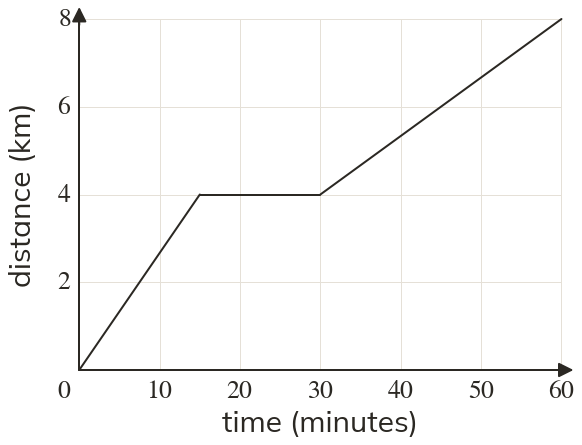
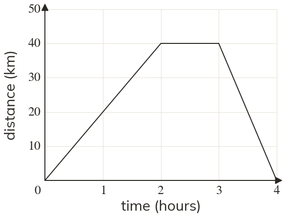
Pick an answer. If it's wrong, the feedback tells you which mistake it was.
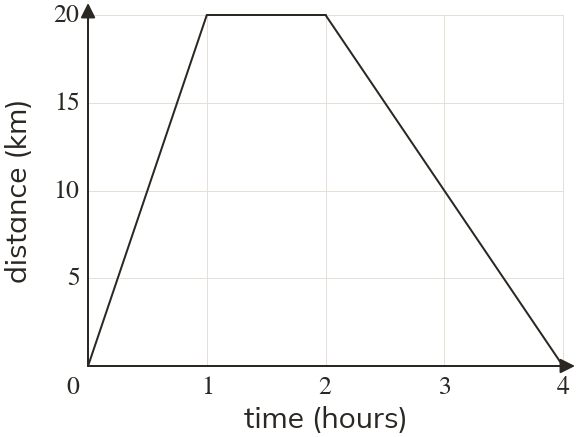
Printable worksheet — the questions with room to work.
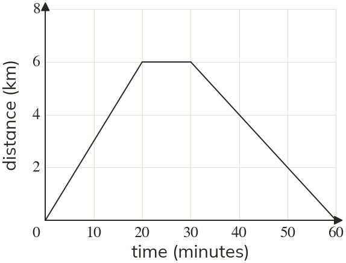
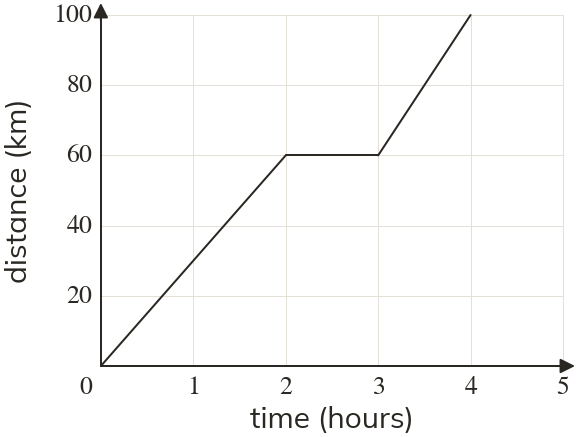
Read each card, then follow the worked examples one step at a time.
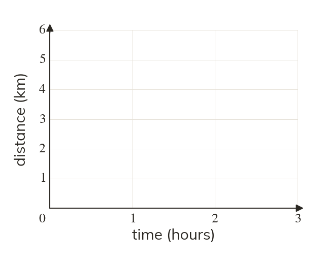
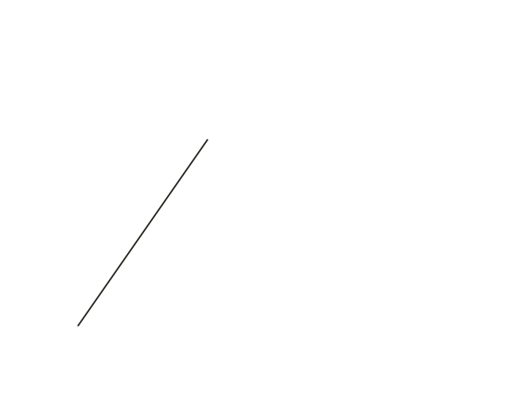
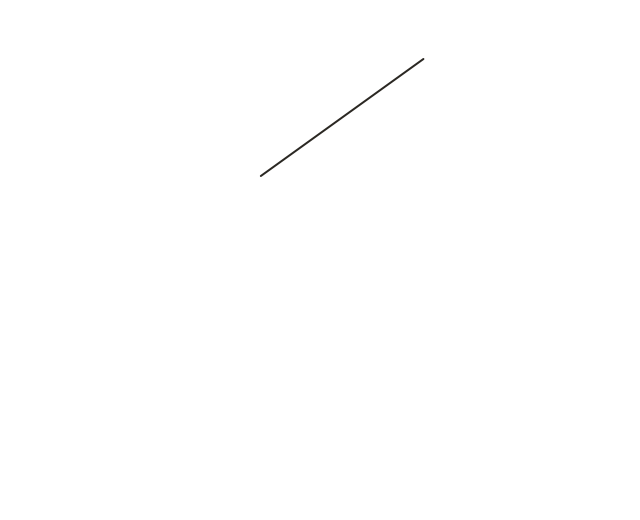
Draw a journey one stage at a time. Each line starts where the last one ended. Distance is always measured from the start.
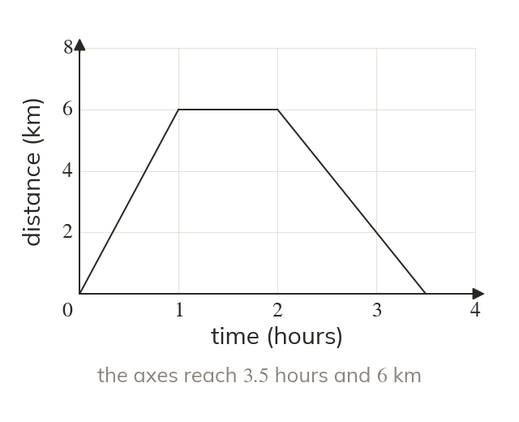
Choose axes that reach the end time and the furthest distance. Then a stop is a horizontal line.
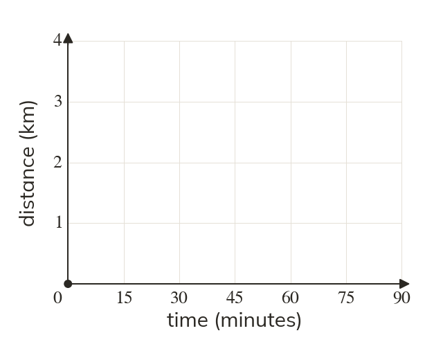
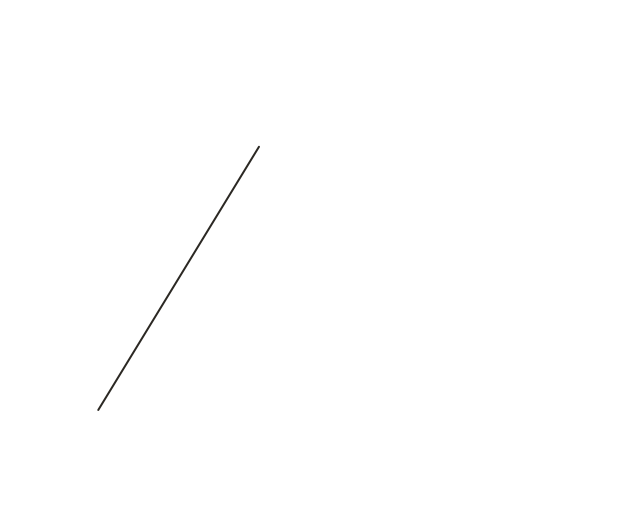
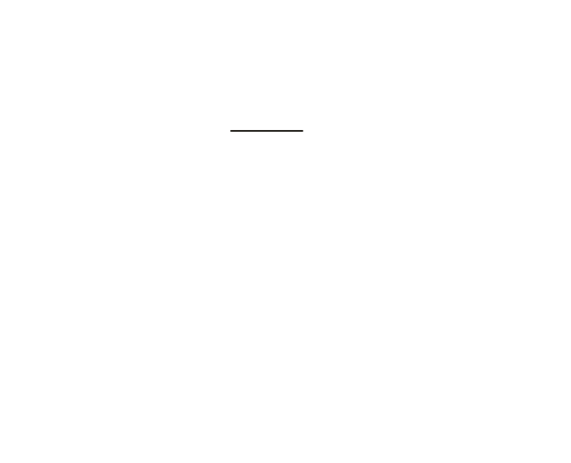
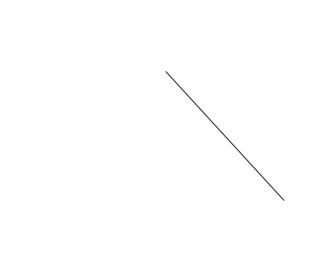
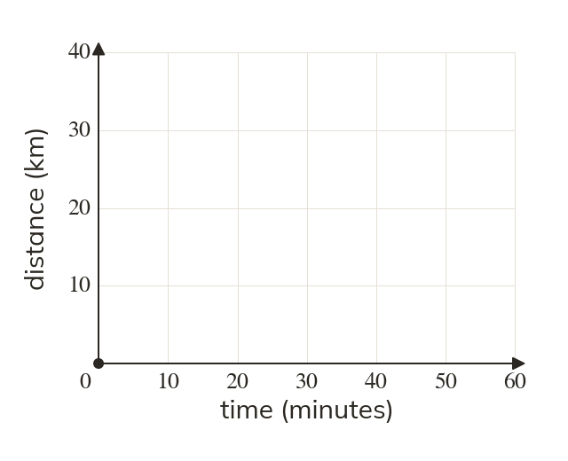
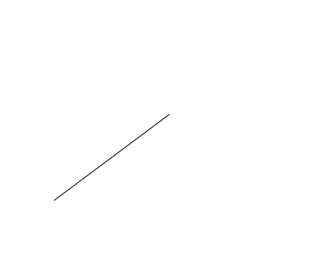
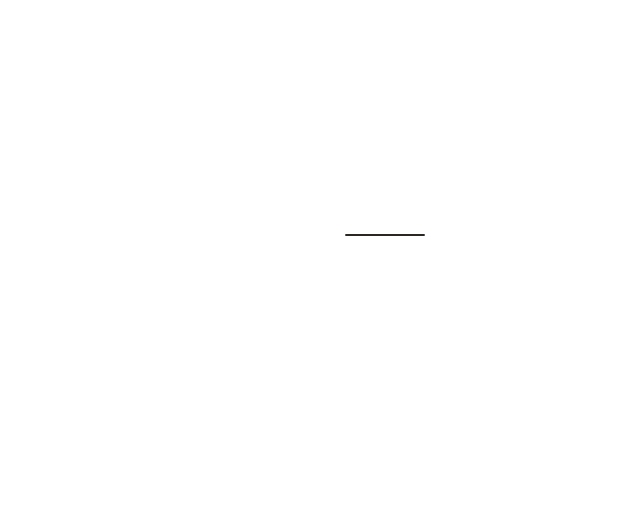
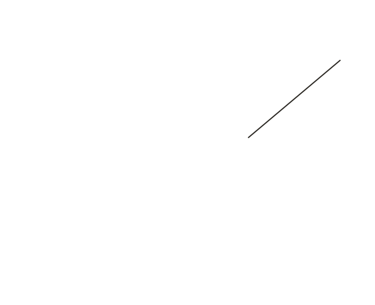
Pick an answer. If it's wrong, the feedback tells you which mistake it was.
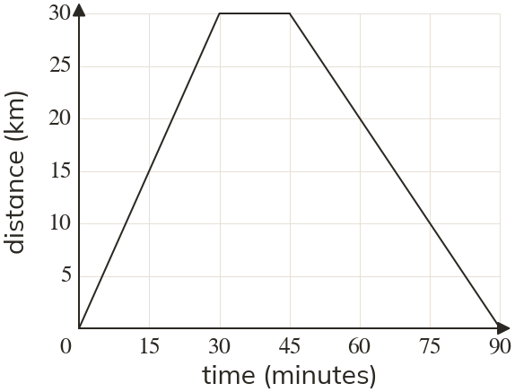
Printable worksheet — the questions with room to work.
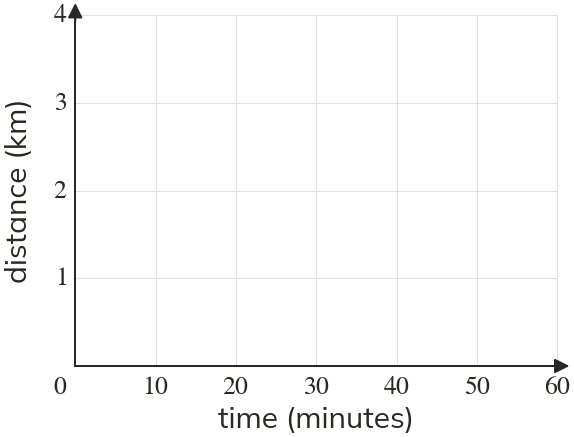
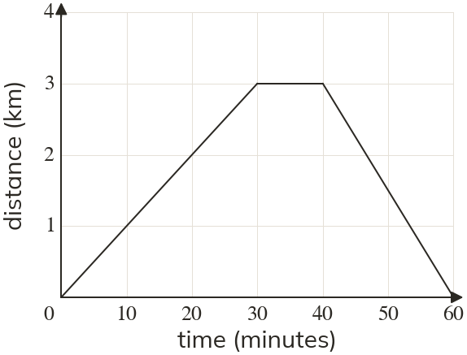
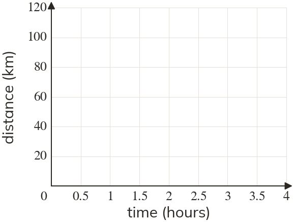
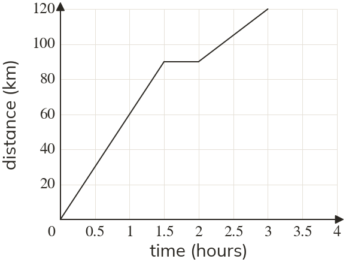
Finished? Next lesson: 8.13.2 Finding Gradients.
For each skill, tap the one that is true for you today. Your Revise pages start with anything you mark Not yet.
Your ratings are saved on this device only.
Log in, then search for a code to practise that skill.
Videos, worksheets and more on each part of this lesson.